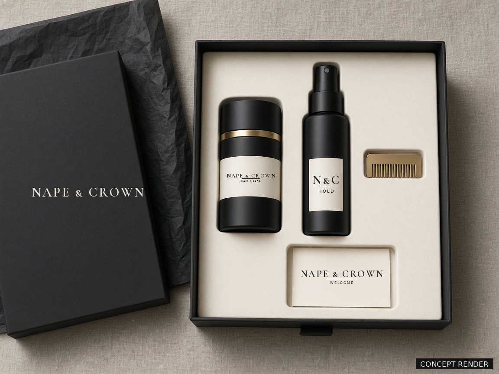

Fine keratin fibers in a weighted, refillable aluminum shaker. Shake into thin spots, pat, set. The look of thicker hair in about a minute, and it washes out with shampoo.
Every photo here will be our founder's own head, shot in the same light with no filters or editing. These are placeholders until the first set is filmed.
Cosmetic effect only. Results vary by hair density and shade match. Fibers wash out with shampoo.
Style dry hair as usual. Hold the shaker about 4 inches above the thin area and tap the fibers in.
Pat lightly with your fingertips so the fibers settle in among your own hair. Use the brass hairline guide along the front.
Finish with two passes of Hold Mist to lock the look in place for the day. Shampoo out at night.
Look at your roots in daylight. If you're between two shades, go darker. If we got it wrong, we'll swap your shade for free.
Aluminum shaker with 25 g of fibers, Hold Mist and a brass hairline guide, packed in a magnetic gift box.
A weighted, refillable aluminum shaker with a fine sifter, filled with 25 g of fibers.
Pour into your shaker. Uses less packaging than buying a new bottle every time.
A light finishing mist that sets the fibers in place.
A screw-on pump applicator for even, controlled coverage.
Hold it along the front hairline to keep the edge crisp.
Your shaker is yours to keep. We send a 25 g refill on your schedule, every 4, 6 or 8 weeks.

Soft-touch magnetic box. Fitted ivory insert. A machined aluminum shaker with a brass band, weighted so it doesn't tip over. It's nothing you'd want to hide in a drawer.
Concept render. Final materials are confirmed after samples.
Colored keratin fibers. The full ingredient list goes on the label and this page once the formula is final.
No. It's a cosmetic. It changes how your hair looks until you wash it out and doesn't treat or change your hair or scalp.
Hold Mist helps the fibers stay put through the day. We're testing the set in rain, sweat and wind before launch, and we'll publish what we find here.
Message us within 30 days and we'll send a different shade at no cost.
After your first order, we send a refill pouch every 4, 6 or 8 weeks. Change, skip or cancel online anytime.